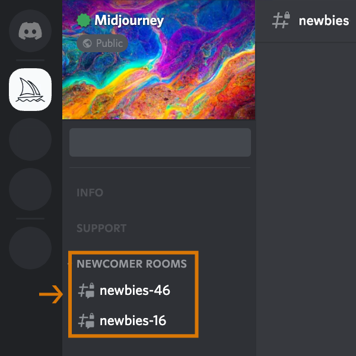
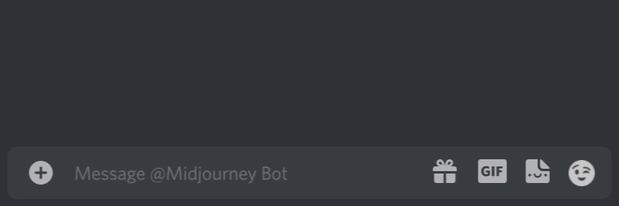
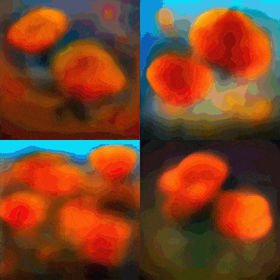
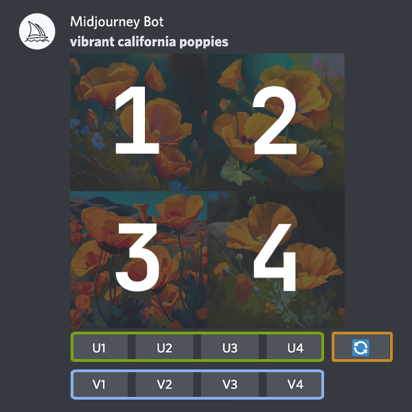
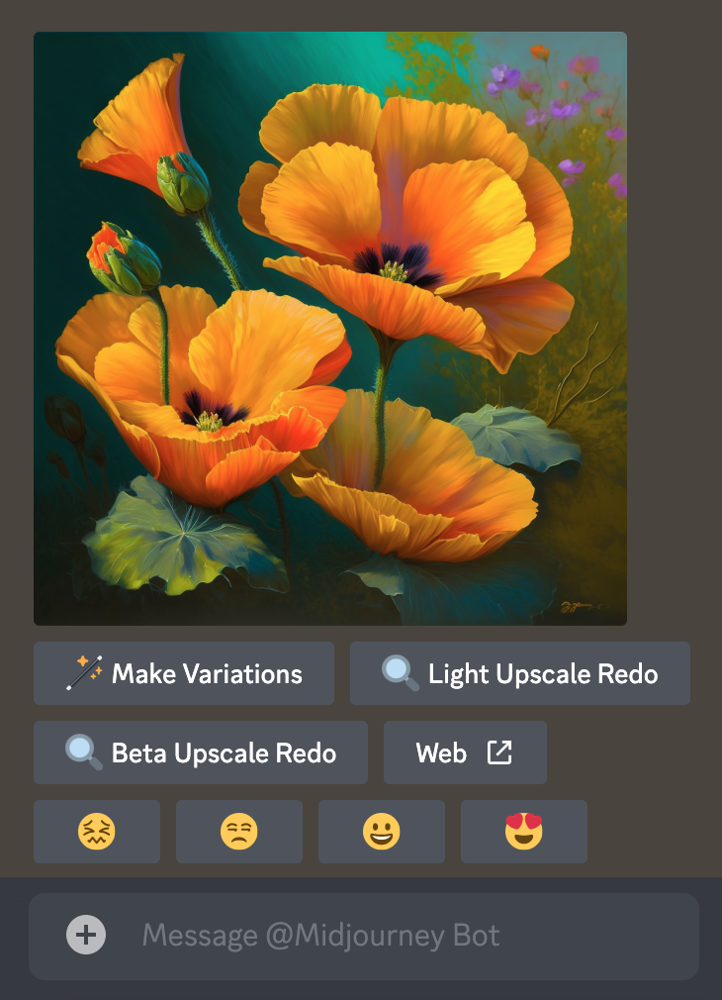

Primi passi
Impara a usare il Bot di Midjourney su Discord
Codice di condotta
- Non essere un idiota.
- Non utilizzare i nostri strumenti per creare immagini che possano offendere, turbare o causare drammi
- Questo include il gore e i contenuti per adulti. Sii rispettoso nei confronti degli altri e del team.
1: Entra in Discord
Vai su Midjourney.com, seleziona Join the Beta o vai direttamente al Midjourney Discord. Prima di unirti al server Discord di Midjourney, è necessario disporre di un login Discord. Scopri come crearne uno qui.

2: Cerca i canali "Newbies"
Sul server ufficiale di Midjourney
Seleziona qualsiasi canale newbies-# visibile nella barra a sinistra.
Su altri server
È possibile generare immagini con il Bot Midjourney su qualsiasi server che abbia invitato il Bot. Cercate sul vostro server le istruzioni per l'uso del Bot.
3: Usare il comando /imagine
I comandi Discord
Interagire con il Bot Midjourney su Discord utilizzando un comando. I comandi vengono utilizzati per creare immagini, modificare le impostazioni predefinite, monitorare le informazioni dell'utente ed eseguire altre operazioni utili. Il comando/imagine genera un'immagine unica a partire da una breve descrizione testuale (nota come promptUn prompt è una breve frase di testo che il Bot di Midjourney interpreta per produrre un'immagine. Il Bot scompone le parole e le frasi di un prompt in pezzi più piccoli, chiamati token, che possono essere confrontati con i dati di "addestramento" e quindi utilizzati per generare un'immagine. Un prompt ben fatto può aiutare a creare immagini uniche ed emozionanti.).
Usare /imagine
- Digitare
/imagine prompt:o selezionare il comando/imaginedal pop-up dei comandi slash. - Digitare una descrizione dell'immagine che si desidera creare nel campo `prompt`.
- Fare clic su invio per inviare il messaggio.
/imagine genera un'immagine unica a partire da una breve descrizione testuale (nota come prompt).

Se non viene visualizzato un pop-up quando si digita il comando /imagine, provare a uscire, aggiornare l'app Discord e rientrare.
I comandi funzionano solo nei canali bot. I comandi non funzionano nei canali normali come #trial-support.
4: Elaborare i Job
Il Midjourney Bot impiega circa un minuto per generare quattro opzioni.
La generazione di un'immagine attiva la versione di prova gratuita di Midjourney. Gli utenti di prova possono realizzare circa 25 lavori prima di dover sottoscrivere un abbonamento.
Un Job è un'azione che utilizza il Bot di Midjourney. I jobs comprendono l'uso del comando /imagine per creare una griglia di immagini, il ridimensionamento di immagini o la creazione di variazioni.
Utilizzare il comando /info per verificare il tempo di prova gratuita rimanente.
5: Fare upscales o creare varianti
Una volta terminata la generazione della griglia di immagini iniziale, appaiono due file di pulsanti:
I pulsanti U generano una versione più grande dell'immagine selezionata, aggiungendo maggiori dettagli.
I pulsanti V creano leggere varianti dell'immagine della griglia selezionata. La creazione di una variante genera una nuova griglia simile allo stile generale e alla composizione dell'immagine scelta.
Il comando 🔄 (re-roll) esegue nuovamente un lavoro. In questo caso, esegue nuovamente il prompt originale producendo una nuova griglia di immagini.
6: Valuta le immagini
Dopo aver utilizzato l'upscaling di un'immagine, apparirà una nuova serie di opzioni:
Make Variations: crea una variante dell'immagine sovrascalata e genera una nuova griglia di quattro opzioni.
Beta/Light Upscale Redo: esegue nuovamente l'upscaling utilizzando un modello diverso di upscaler.
Web: Apre l'immagine nella propria galleria su Midjourney.com.
Fai clic su un emoji per valutare qualsiasi immagine in scala crescente sul sito web di Midjourney o su Discord. Ogni giorno, i primi 1000 utenti che valutano immagini riceveranno un'ora di tempo gratuito in modalità Fast. Valuta il tuo lavoro o quello degli altri in base al tuo stile e alla tua opinione personale. Ti piace l'aspetto, l'impegno, i colori, il concetto o il tema? Dai un voto 😍
7: Salva le immagini
Fai clic sull'immagine per aprirla a grandezza naturale, quindi fai clic con il pulsante destro del mouse e scegliere "Salva immagine". Sui dispositivi mobili, toccare a lungo l'immagine e poi toccare l'icona di download nell'angolo in alto a destra. Tutte le immagini sono immediatamente disponibili su midjourney.com/app. Accedi a Discord per visualizzarle.
8: Sottoscrivi un abbonamento
Gli utenti di prova hanno a disposizione circa 25 lavori gratuiti. I lavori non scadono e non si rinnovano. Per ottenere più immagini, utilizzare il comando /subscribe in qualsiasi Canale Bot per generare un link personale alla pagina dell'account Midjourney. Non condividere questo link personale con altri.
Per i prezzi e ulteriori informazioni, visitare la sezione Subscriptions